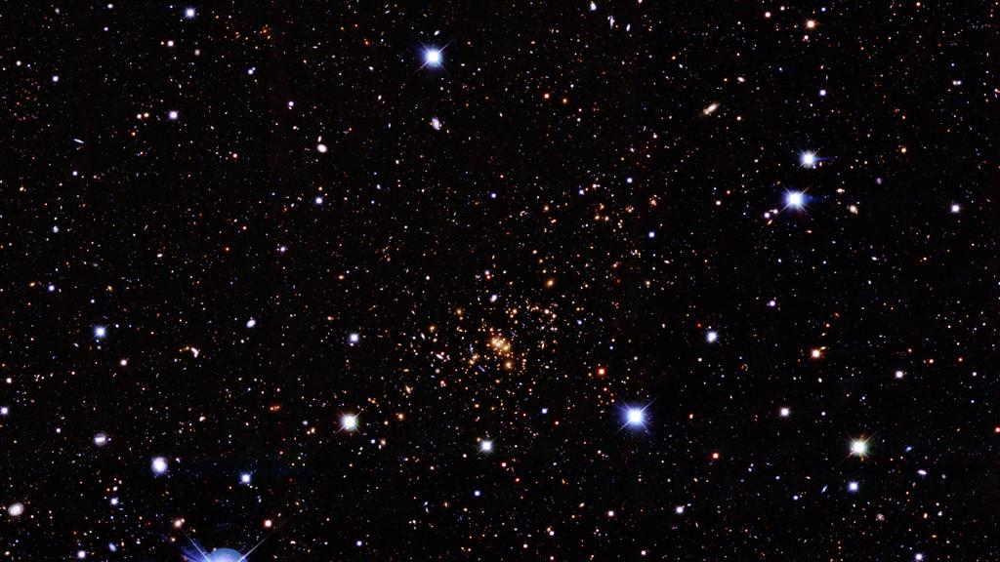
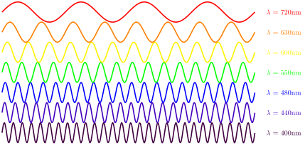
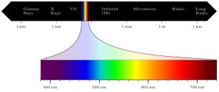
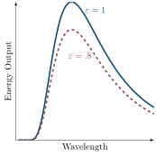

The Spooky Spectral
Jed Rembold
February 1, 2024
Announcements
- Homework 1 due on tomorrow night!
- Make sure you have at least attempted to export to a standalone HTML before the end of today!
- All the groups look good and have all members joined, so just remember to upload!
- Starting Unit 2: Stars today!
- Aiming to have HW2 and associated partners posted by the end of tomorrow
- You’ll have some time at the end of next Tuesday to meet up with your new partner
Today’s Plan
- What is light?
- The electromagnetic spectrum
- Black Bodies and Planck’s Law
- Wien’s Law
- Fitting
How do we see?
- We see an object when light from that object reaches our eyes
- Either because the object itself emits light
- Or because that object reflected light
Some Light Processing
- We get two pieces of information:
- The direction the light enters the eyes gives us positional information
- The color of the light gives us information about the composition of the light
Tricks of Light
- A single image gives no distance information
- Light can bend, which can confuse your brain

But what IS it?
- Light is, first and foremost, a wave
- Similar to an ocean wave, in that it travels in a direction
- Affects both electric charges and magnets “floating” atop itself
- Accordingly referred to as an electromagnetic wave
Properties of Waves

- All light waves move at the speed of light, \(c\): \[ c = 3\times 10^8 \text{ m/s}\]
- Amplitude corresponds to brightness
- Wavelength/frequency correspond to color or portion of spectrum
The Rainbow

You’re (Mostly) Blind!

Everything the light touches…
- The general term electromagnetic radiation describes all the wavelengths of electromagnetic waves, not just the visible ones we generally refer to as “light”
- Everything that emits or reflects radiation we can observe
- The visible bits are just a tiny fraction of the huge spectrum of possibilities
- Gives rise to different forms of astronomy:
- Optical
- Radio
- Microwave
- High Energy (Gamma/X Ray)
How to make some light
- How does one produce electromagnetic radiation?
- Microscopically: by accelerating electric charges
- Macroscopically: by making something hot
- By “hot” we just really mean “not 100% cold”…
- Heat excites the particles, moving them around and thus accelerating charges
- What wavelengths are emitted depends on the object’s temperature
- Hot objects produce more radiation, in general
- Hot objects produce more radiation at shorter wavelengths
A Shining Example
- The color of a star depends on its temperature!
- Brightness also depends on the temperature, but is also dependent on the star’s size and distance from us
Planck’s Law
- The brightness emitted from a body in thermal equilibrium is governed by Planck’s Law: \[ B(\lambda, T) = \frac{2hc^2}{\lambda^5} \frac{1}{\exp\left(\frac{hc}{\lambda k_B T}\right) - 1} \] where \[ \begin{aligned} h &= 6.6261 \times 10^{-34} \\ c &= 3\times10^8 \\ k_B &= 1.381 \times 10^{-23} \\ \lambda &= \text{wavelength in meters} \\ T &= \text{temperature in kelvin} \end{aligned} \]
Planck’s Law Visualized

Nothing is Perfect
- Most things are not perfectly in thermal equilibrium, which will reduce the amount of radiation
- How well an object radiates is called its emissivity (\(\varepsilon\))
- Reduces the amount of radiation, but doesn’t change wavelengths
- Does mean that often you’ll have an extra unknown parameter though \[ B(\lambda, T) = \varepsilon \cdot \frac{2hc^2}{\lambda^5} \frac{1}{\exp\left(\frac{hc}{\lambda k_B T}\right) - 1} \]

Wien’s Law
- Wien’s Law relates the wavelength at the peak of the spectral black body curve to a temperature
- Can be useful if you only care about the temperature, and can observe the peak of the curve
- Has a very simple expression: \[ \lambda_{peak} = \frac{2.8977\times10^{-3}}{T} \] in standard units, where \(T\) is measured in kelvin
Fitting Planck
- A spectra is an observable quantity
- Even if the star is far away so that it’s brightness is lower, that just scales down the entire curve
- Spectra can thus be used to determine the approximate temperature of
stars though either:
- Use of Wien’s Law
- Fitting Plancks law directly
- Use of Wien’s Law is usually simpler, but there can be times when
you need to fit the entire blackbody curve
- Requires a nonlinear fit, but can still be done using common least squares algorithms (at least for the precision we need here)
Least Squares Nonlinear Fitting (Python)
- In Python, you want
curve_fitfromscipy.optimizefor this probably (docs here) - Need to define the function you want to fit, where the first
parameter is the independent variable, and subsequent parameters are any
desired fit parameters
- For Planck’s law, that means wavelength is the first parameter, and amplitude and temperature the second
- When using
curve_fitneed to provide:- The function name you want to fit
- The xdata
- The ydata
- An initial guess for any fit parameters (else starts at 1)
Least Squares Nonlinear Fitting (R)
In R, you’ll likely want to use the
nlsfunctionGive it a formula, using the column names where appropriate:
brightness ~ A / wavelength^2 ...Specify what dataframe you are pulling the column names from:
data=dfNeed to provide a list of starting values for the parameters
start = list(A=100, T=1000)
Fitting Demos
- For a demonstration, we are going to use the data here
- Noisy black body data with some generate reduction in brightness
- Want to fit both the temperature and the new brightness